Uživatelská příručka · verze 0.2.0
ResoOpus
Drone syntezátor pro filmové, ambientní a experimentální plochy. Čtyři ručně a mikrotonálně laděné hlasy v pěti typech hrají hned po vložení do stopy. Uprostřed je knob GRAVITY, který vede od čistého ladění k chaosu. K tomu polyfonní LEAD s filtrem pro každou notu, dva filtry s routingem, ozvěna, prostor a stránka MOD se dvěma LFO, náhodným zdrojem, modulační obálkou a maticí modulací. Hrát jde jen drone, jen lead, nebo obojí.
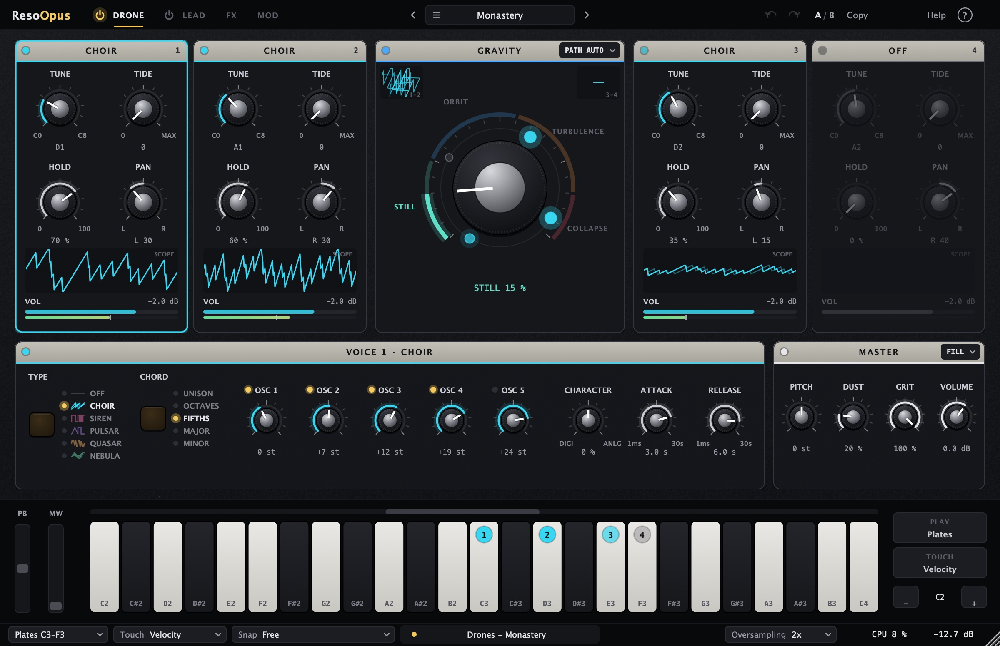
01Jak funguje
ResoOpus je nástroj, který zní sám od sebe. Každý hlas má HOLD, tedy úroveň, na které hraje i bez doteku. Když hlas zahraješ, zesílí nad tuto úroveň a po puštění se do ní zase vrátí. Klávesy tak drone nespouští, ale tvarují.
| Stránka | Co obsahuje |
|---|---|
| DRONE | Čtyři hlasy (typ, ladění, HOLD, PAN, hlasitost, osciloskop), GRAVITY, detail vybraného hlasu, MASTER (PITCH, DUST, GRIT, VOLUME, FILL). |
| LEAD | Melodická vrstva: oscilátory, filtr s obálkou pro každou notu, obálka hlasitosti, polyfonie, glide, vibrato, ARP. |
| FX | FILTER A a B s routingem, ECHO a SPACE. |
| MOD | LFO 1, LFO 2, RANDOM, MOD ENV a matice všech modulací. |
Drone, lead, nebo obojí
V horní liště jsou u záložek DRONE a LEAD vypínače (zlatá = hraje):
| DRONE | LEAD | Výsledek |
|---|---|---|
| zapnuto | vypnuto | Jen drone (výchozí). Plates C3–F3 hrají hlasy, ostatní klávesy nic. |
| zapnuto | zapnuto | Obojí. Plates hrají drone, všechny ostatní klávesy LEAD. |
| vypnuto | zapnuto | Jen lead. Hlasy dronu ztichnou a nezatěžují procesor, všechny klávesy včetně plates hrají LEAD. Stránka DRONE se ztlumí. |
Hlasy, LEAD i filtry běží s oversamplingem (výchozí 2×), takže ani vysoké tóny a silná modulace nezní digitálně tvrdě. Na konci je měkký limiter, který drží výstup pod −0,3 dBFS.
Nic nehraje? Je to v pořádku.Některé presety (Slow Bloom, Requiem Air, Four Plates) mají HOLD na nule: zní, jen když hraješ. Ostatní presety droní hned po vložení.
02Rychlý start
- Vlož ResoOpus na MIDI stopu v Abletonu (Plug-Ins → Gavr → ResoOpus). Hned uslyšíš drone.
- Zahraj bílé klávesy C3, D3, E3, F3 (na klávesnici dole označené 1–4). Každá zesílí jeden hlas. Čím silněji, tím víc.
- Otoč GRAVITY uprostřed. Doleva čisté ladění a pomalé zázněje, doprava se hlasy začnou chvět, vrčet a nakonec pulzovat samy.
- Klikni na název presetu nahoře. Otevře se prohlížeč s kategoriemi a popisem, co u presetu otočit nejdřív.
- Zapni LEAD vypínačem u záložky LEAD: klávesy mimo C3–F3 pak hrají melodii, v režimu Poly 8 i akordy.
03Hlasy
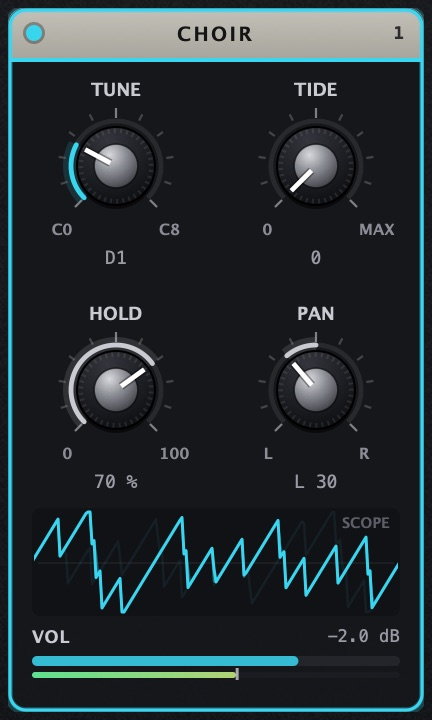
Každý hlas je samostatný modul. Klikem do něj ho vybereš a jeho podrobnosti se ukážou v panelu VOICE pod ním.
- Hlavička ukazuje typ a číslo hlasu (= číslo plate na klávesnici). Tečka vlevo svítí, když hlas zní.
- TUNE: ladění C0–C8, volné a mikrotonální. Dvojklikem napíšeš notu i s centy, třeba
D2+12. - Druhý knob mění podle typu: TIDE (CHOIR), FM (SIREN), SHARP (PULSAR), INDEX (QUASAR), POSITION (NEBULA).
- HOLD: úroveň, na které hlas zní bez doteku. 0 % = hlas zní jen při hraní.
- PAN: poloha vlevo a vpravo.
- SCOPE: živý průběh hlasu v barvě jeho typu, vždy dvě periody jeho tónu, takže obraz stojí. Výška křivky je hlasitost. Klikem přepneš na SPECTRUM (harmonické, akord, vrčení TIDE).
- VOL: tažením hlasitost (−60 až +6 dB), dvojklik = −2 dB. Tenký proužek pod ní je aktuální úroveň, svislá značka na něm je HOLD.
V detailu hlasu je vždy TYPE, CHARACTER (viz níže), ATTACK (1 ms–30 s, jak pomalu hlas nastupuje, platí i pro náběh na úroveň HOLD) a RELEASE (1 ms–30 s, jak dlouho doznívá). Vypnutý hlas (OFF) nezatěžuje procesor.
04Typy hlasů
Každý typ má v přepínači TYPE vlastní ikonu průběhu v barvě typu: CHOIR (pět pil), SIREN (obdélník se sirénou), PULSAR (tvar od trojúhelníku po obdélník), QUASAR (FM) a NEBULA (wavetable).
CHOIR: pět pil jako akord
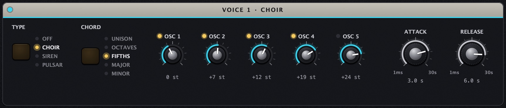
- CHORD naplní všech pět intervalů najednou: Unison (pár centů od sebe, zázněje), Octaves, Fifths, Major (0 4 7 12 16), Minor (0 3 7 12 15).
- OSC 1–5: interval každé pily nad TUNE (−24 až +36 půltónů). Se Shift se ladí po centech. LED nad knobem pilu vypne.
- TIDE (v modulu hlasu): do 50 % stahuje celý akord dolů. Nad 50 % klesá dál a pily se začnou navzájem modulovat: vrčení, kovové alikvoty a na dně praskání (pily klesnou až na pár Hz a cvakají). Praskání ztlumíš knobem GRIT v MASTER.
SIREN: sirény, ptáci, monstra, vítr
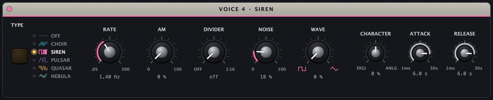
| Ovladač | Co dělá |
|---|---|
| FM (v modulu hlasu) | Jak daleko modulátor táhne výšku, až ±3 oktávy. |
| RATE | Rychlost modulátoru 0,05–300 Hz: pomalé houkání, trylky, bzučení. Nad ~30 Hz vzniká nová barva tónu. |
| AM | Jak moc modulátor seká tón na pípnutí (morseovka, alarm). |
| DIVIDER | Přidá podtón: 1:2 = oktáva dolů, 1:3, 1:5… až 1:16. Vrčení a monstra. |
| NOISE | Bílý šum: vítr, příboj, statika. |
| WAVE | Tvar modulátoru: obdélník (dvoutónová siréna) až trojúhelník (kvílení). |
PULSAR: jeden tón, který rozkvete
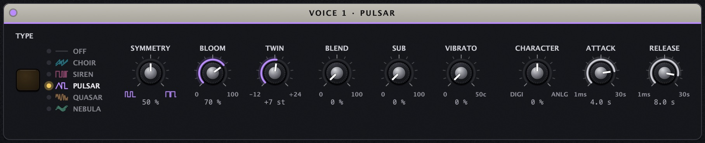
- SHARP (v modulu hlasu): tvar tónu od měkkého trojúhelníku přes „žraločí ploutev“ a pilu po ostrý obdélník.
- SYMMETRY: souměrnost tvaru. U obdélníku je to šířka pulzu: úzký pulz zní nosově a tence, 50 % je čistý obdélník.
- BLOOM: obálka ohýbá tón. Začne trochu pod svou výškou a matně, pak se vytáhne nahoru a rozzáří.
- TWIN a BLEND: druhý tón nad prvním (−12 až +24 půltónů). Pár centů od unisona = pomalé zázněje, 7 = kvinta.
- SUB: měkký tón o oktávu níž. VIBRATO: až 50 centů, každý hlas má trochu jinou rychlost.
QUASAR: dvouoperátorové FM
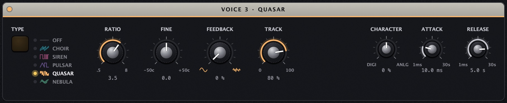
Dva sinusové oscilátory: modulátor mění fázi tónu. Zvony, kov, elektrické piano, digitální plochy.
- INDEX (v modulu hlasu): hloubka FM, od čistého sinusu po jasný, ostrý tón.
- RATIO: kmitočet modulátoru proti tónu (0,5–8). Celá čísla zní harmonicky, ostatní (1,41; 3,5…) jako zvony a kov.
- FINE: rozladí modulátor o ±50 centů. Pomalé zázněje a třpyt.
- FEEDBACK: modulátor moduluje sám sebe. Sinus se mění směrem k pile a šumu.
- TRACK: jak moc INDEX sleduje hlasitost hlasu. Tichý hlas je tmavší, takže doznívající zvon přirozeně tmavne.
Hloubka FM je omezená tak, aby postranní pásma zůstala pod Nyquistovým kmitočtem. Ani vysoké tóny s velkým INDEXem proto nevytvářejí aliasing (−76 dB na 1976 Hz).
NEBULA: wavetable
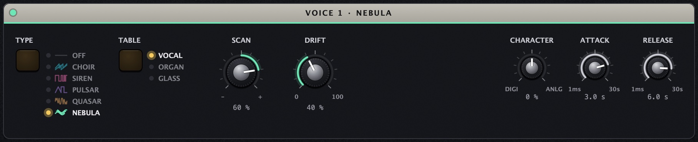
- TABLE: tři rodiny tabulek po osmi vlnách. Vocal (bručení a samohlásky U, O, A, AE, E, I, ER), Organ (varhanní rejstříky od flétny po plné varhany a jazýček), Glass (skleněné, zvonivé a digitální spektra).
- POSITION (v modulu hlasu): poloha v tabulce. Sousední vlny se plynule prolínají.
- SCAN: čím hlasitěji hlas zní, tím dál se posune POSITION. Když zahraješ plate, zvuk projede tabulkou (záporné hodnoty opačným směrem).
- DRIFT: POSITION se sama pomalu posouvá sem a tam.
CHARACTER: Digital – Clean – Analog
Plynulý knob u každého typu. Uprostřed je hlas čistý. Doprava (Analog): každý oscilátor je trochu jinak naladěný a sám bloudí, hrany se zaoblí, přibudou sudé harmonické a jemná saturace. Doleva (Digital): snížená bitová hloubka a vzorkovací kmitočet, aliasing záměrně jako barva (staré samplery a herní konzole).
Průběhy oscilátorů
Nákresy jsou vyrenderované přímo z DSP kódu pluginu (stejné třídy, které hrají v Abletonu), ne z ideálních tvarů. Všechny grafy mají stejnou výšku, skutečné hlasitosti se liší.
CHOIR
SIREN
PULSAR
QUASAR
NEBULA
LEAD · WAVE
Pila CHOIRu a obdélník SIRENu jsou pásmově omezené: skoky se vyhlazují (BLEP). QUASAR hlídá šířku pásma FM a NEBULA má pro každou oktávu vlastní pásmově omezenou kopii tabulky. Hlasy navíc běží s oversamplingem, takže aliasing vzniká, jen když ho chceš (CHARACTER Digital).
05GRAVITY
GRAVITY je srdce nástroje: jeden knob od ladění k chaosu. Hlasy se navzájem frekvenčně modulují, nejdřív v párech, pak v jednom kruhu, a nakonec do smyčky vstupuje i výstup nástroje.
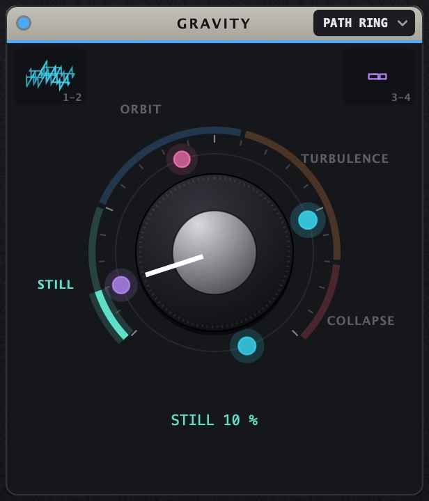
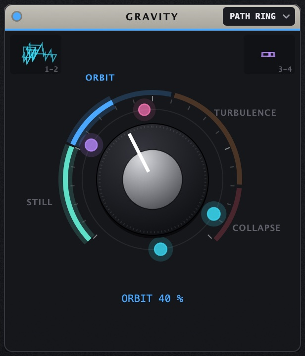
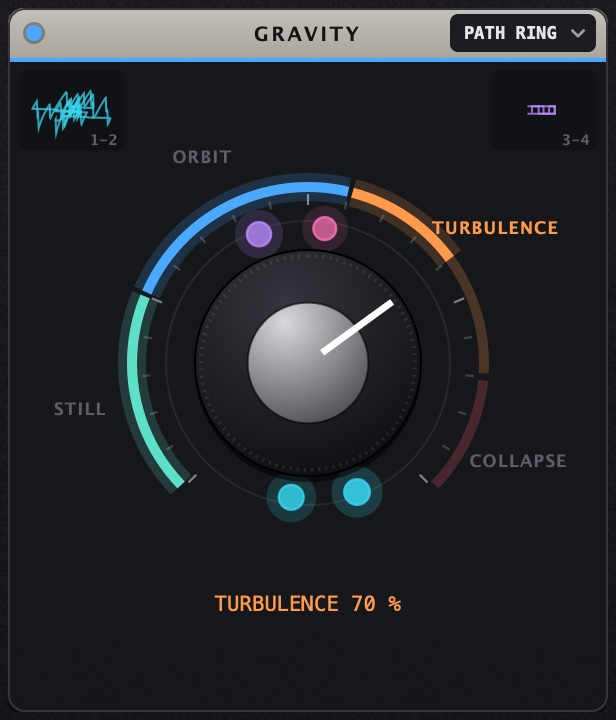
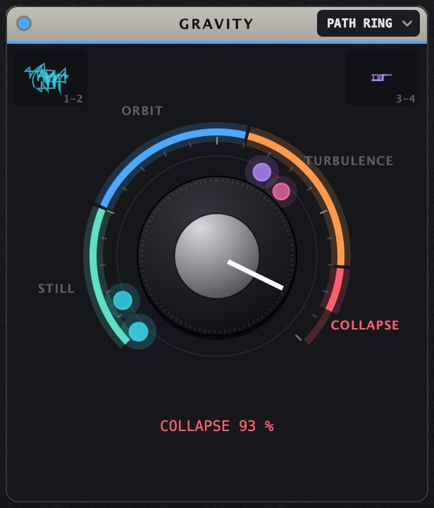
Barevné tečky na oběžné dráze jsou hlasy v barvě svého typu, s rostoucí GRAVITY se k sobě přitahují a třesou. V horních rozích jsou X/Y figury párů 1-2 a 3-4: hlas proti partnerovi. Ve STILL je to klidná, pomalu se otáčející figura, v ORBIT se chvěje, v TURBULENCE se rozpadne. Hlasitost se mezi STILL a COLLAPSE mění jen asi o 2 dB, takže GRAVITY můžeš automatizovat bez skoků.
- PATH (výběrové tlačítko vpravo v hlavičce GRAVITY): Auto (páry do poloviny, pak kruh), Pairs (vždy páry 1·2 a 3·4), Ring (vždy kruh 1→2→3→4→1). Pravým tlačítkem na knob GRAVITY otevřeš Modulate with.
- Tažení nahoru a dolů (Shift jemně), kolečko, dvojklik = napsat hodnotu, Cmd/Ctrl-klik = výchozí 15 %.
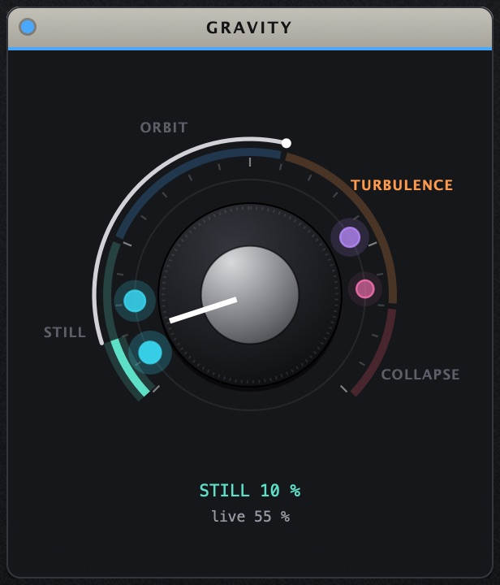
Když GRAVITY moduluješ, ukáže se kolem knobu prstenec a tečka aktuální hodnoty. Tažením prstence měníš hloubku.
Nejlepší kombinace je tlak prstu (aftertouch) na GRAVITY: lehký dotek drží hlasy na oběžné dráze, silnější je stáhne do turbulence (presety Gravity Well, Event Horizon). Nebo LFO v tempu, které GRAVITY houpe po taktech (preset Lunar Tide).
ECHO TO VOICES na stránce FX vrací ozvěnu do hlasů jako další FM. S vyšší GRAVITY se pak celý nástroj stane jednou smyčkou.
06MASTER a DUST
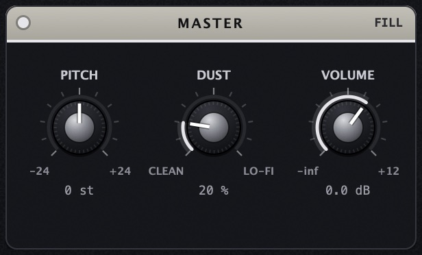
- PITCH: transpozice všech čtyř hlasů najednou (±24 půltónů), intervaly mezi nimi zůstanou.
- DUST: analogový život celého nástroje. Pomalé bloudění ladění, hlasy prosakují jeden do druhého, v pozadí tichý dech šumu (nejvýš −54 dBFS). Na rozdíl od CHARACTER působí na všechny hlasy a na jejich vztahy.
- GRIT: ostrost hran, kterými se hlasy navzájem modulují (GRAVITY, DUST, TIDE). 100 % = surové vrčení a praskání. Níž se hrany zaoblují a praskání mizí: na 50 % zmizí cvakání pil stažených TIDE na pár Hz a běžný tón se skoro nezmění, na 0 % je hladší i COLLAPSE.
- VOLUME: výstupní hlasitost (−∞ až +12 dB).
- FILL (výběrové tlačítko v hlavičce): rozloží čtyři hlasy do zvolené stupnice od zvoleného základu.
07Stránka LEAD
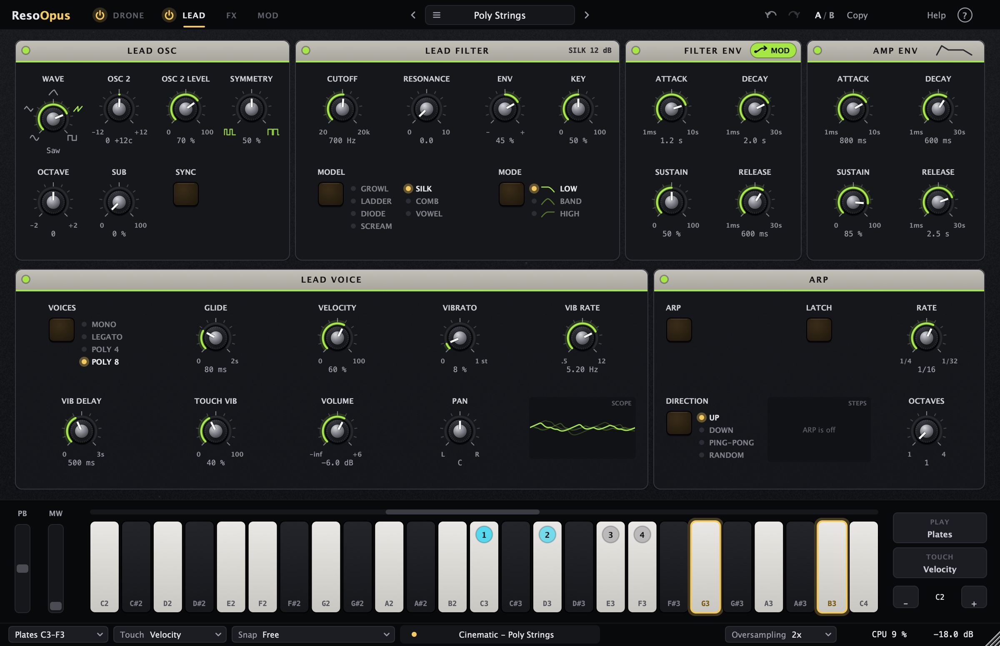
LEAD je melodická vrstva nad dronem (nebo místo něj). Zapíná se vypínačem u záložky LEAD. Hraje přes stejné filtry, ECHO i SPACE jako hlasy. Při ROUTING Split má vlastní FILTER B.
| Panel | Ovladače |
|---|---|
| LEAD OSC | WAVE plynule sinus → trojúhelník → žraločí ploutev → pila → obdélník (ikony kolem knobu). OSC 2 interval ±12 půltónů, OSC 2 LEVEL, SYMMETRY (šířka pulzu), OCTAVE ±2, SUB sinus o oktávu níž, SYNC = tvrdá synchronizace OSC 2. |
| LEAD FILTER | Filtr pro každou notu zvlášť: CUTOFF, RESONANCE, ENV (kolik obálka posune cutoff, ±6 oktáv), KEY (cutoff sleduje notu), MODEL (stejných sedm jako FILTER; COMB s KEY 100 % a CUTOFF 262 Hz = C3 hraje naladěnou drnkací strunu) a MODE (low pass, band pass, high pass). Na 20 kHz a bez obálky je vyřazený (bypass) a zvuk nijak nebarví. |
| FILTER ENV | ADSR obálka filtru. Barevná pilulka v hlavičce je zdroj LEAD ENV: přetáhni ji na knob a obálka leadu bude modulovat cokoli (třeba GRAVITY). |
| AMP ENV | ADSR hlasitosti: ATTACK 1 ms–10 s, DECAY a RELEASE 1 ms–30 s, SUSTAIN. |
| LEAD VOICE | VOICES: Mono (každá nota znovu spustí obálky), Legato (překrývané noty jen klouzají), Poly 4 a Poly 8 (akordy a melodie nad dronem). GLIDE, VELOCITY (jak moc síla úhozu mění hlasitost a obálku filtru), VIBRATO, VIB RATE, VIB DELAY, TOUCH VIB, VOLUME, PAN. |
| ARP | ARP, LATCH, DIRECTION Up / Down / Ping-Pong / Random, RATE 1/4 až 1/32 včetně triol, OCTAVES 1–4. Běží v tempu skladby. |
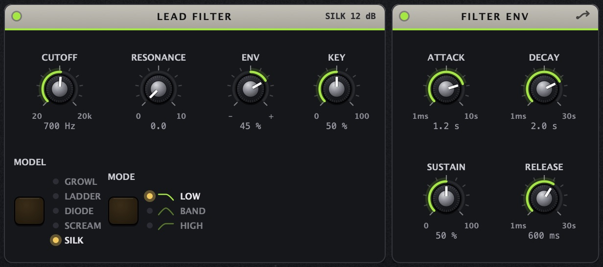
V Mono a Legato hraje vždy poslední zmáčknutá nota, po puštění se LEAD vrátí na předchozí drženou. V Poly se pro novou notu použije volný hlas, jinak nejtišší doznívající, jinak nejstarší. Sustain pedál drží noty, dokud ho nepustíš.
08Stránka FX
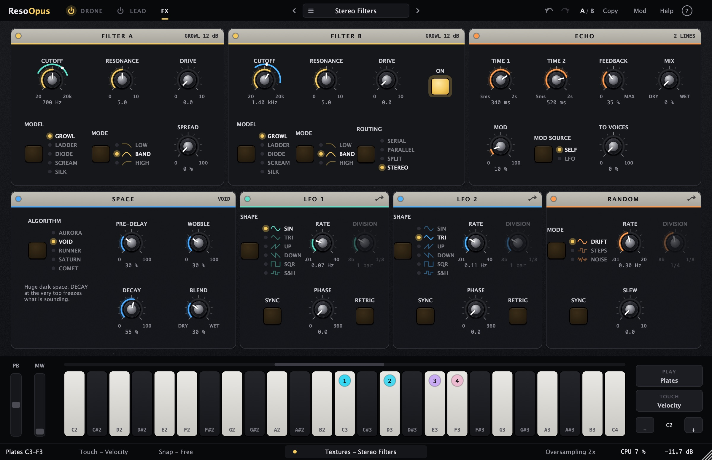
FILTER A a FILTER B
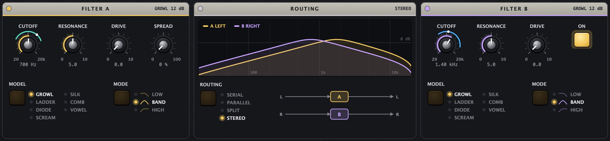
Dva stereo filtry pro celý nástroj, běží s oversamplingem. Oba mají CUTOFF 20 Hz–20 kHz, RESONANCE 0–10, DRIVE 0–10, MODEL a MODE (low pass, band pass, high pass; s ikonami). SPREAD u A rozladí levý a pravý filtr proti sobě. FILTER B se zapíná tlačítkem ON.
Mezi filtry je panel ROUTING. Graf v něm je skutečná odezva obou filtrů, změřená ze stejného kódu, který hraje, včetně modulace: když LFO houpe cutoffem, křivka se hýbe. Zlatá křivka je A, fialová B, bílá je výsledek podle routingu (Serial = A × B, Parallel = A + B). U Split a Stereo jsou křivky popsané DRONE / LEAD nebo LEFT / RIGHT. Pod grafem je přepínač ROUTING a schéma, kudy signál teče.
| ROUTING | Co dělá |
|---|---|
| Serial | Nejdřív A, pak B. Například low pass A + high pass B = pásmová propust. |
| Parallel | A a B paralelně, výstupy se sečtou. Dva charaktery najednou, nebo zářez (notch). |
| Split | Drone jde přes A, LEAD přes B. Tmavý drone a jasný lead se nezakalí. |
| Stereo | A vlevo, B vpravo. Široký, pohyblivý obraz. |
| Model | Strmost | Charakter |
|---|---|---|
| GROWL | 12 dB | Op-amp state variable, jehož integrátory se ořezávají. Basy drží při jakékoli rezonanci. DRIVE ohýbá vlnu nesouměrně (sudé harmonické, vrčí). Na vrcholu rezonance se sám rozezní zrnitým tónem. |
| LADDER | 24 dB | Tranzistorový ladder: kulatý a teplý. S rezonancí ubývají basy (asi o 7 dB), na vrcholu se rozezní čistým sinusem. DRIVE přidává liché harmonické. |
| DIODE | 24 dB | Diodový ladder: gumová rezonance, která se s hlasitostí stlačuje a bere basy. Diody ořezávají nesouměrně (sudé i liché harmonické). Sám se nerozezní, rezonance spíš kouše, než zvoní. |
| SCREAM | 12 dB | Sallen-Key s diodami v rezonanci: agresivní, s drivem kouše ještě víc. Od rezonance ~9,3 křičí a rozezní se ostrým, skoro obdélníkovým tónem. DRIVE ořezává nejtvrději. |
| SILK | 12 dB | Čistý digitální filtr: lineární, rezonance nezávisí na hlasitosti a nepřidává harmonické. Velmi úzký, ale sám se nerozezní. DRIVE jen tlačí do měkkého stropu. |
| COMB | ladí | Hřebenový filtr: CUTOFF je jeho výška, RESONANCE zpětná vazba. MODE LOW = tlumená struna (teplá), BAND = zní všechny harmonické (kov), HIGH = jen liché harmonické o oktávu níž (dutá trubka, klarinet). U LEADu s KEY 100 % a CUTOFF 262 Hz hraje naladěnou drnkací strunu. |
| VOWEL | formanty | Tři formanty jako hlasivky a ústa: CUTOFF projíždí samohlásky U–O–A–E–I (od tmavé po jasnou), RESONANCE zostřuje, MODE je velikost hrdla: LOW muž, BAND žena, HIGH dítě. |
Při plné rezonanci si Band Pass udrží hlasitost, úzké pásmo tedy nezmizí, ale zpívá. Stejných sedm modelů má i filtr LEADu.
ECHO
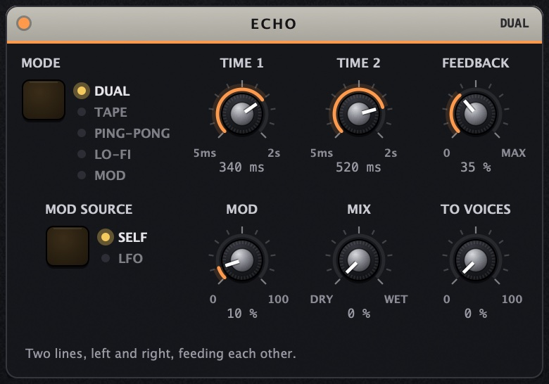
Pět režimů (MODE) se stejnými knoby. Popisky knobů se mění podle toho, co v daném režimu dělají.
| MODE | TIME 1 · TIME 2 · MOD | Zvuk |
|---|---|---|
| DUAL | TIME 1 · TIME 2 · MOD | Dvě linky, levá a pravá, se křížovou zpětnou vazbou. MOD SOURCE Self = výstup echa moduluje jeho vlastní čas, LFO = pomalý sinus. |
| TAPE | HEAD 1 · HEAD 2 · WOW | Pásková ozvěna: jedna pásková smyčka a dvě přehrávací hlavy. Nahrávání saturuje a stlačuje, každé přehrání ubírá výšky i basy (120 Hz–2,8 kHz), takže opakování tmavnou. WOW je kolísání rychlosti pásku (wow, flutter, pomalý drift), DUST přidá šum pásku. Při změně času výška klouže jako při změně rychlosti pásku. |
| PING-PONG | TIME L · TIME R · MOD | Vstup jde jen do levé linky, levá pak napájí pravou a pravá levou: opakování se střídají vlevo a vpravo. |
| LO-FI | TIME 1 · TIME 2 · DEGRADE | Špatný digitální delay: opakování ztrácejí vzorkovací kmitočet (16 kHz až ~3 kHz) a bity (12 až 4), jsou tmavá, zrnitá a trochu šumí. DEGRADE určuje, jak moc. |
| MOD | TIME 1 · TIME 2 · DEPTH | Opakování s chorusem: každá linka se houpe až o 8 ms, levá a pravá o čtvrt periody posunuté. Čisté a široké. |
- FEEDBACK: nad ~55 % začne echo samo zpívat. Smyčka je omezená, takže hlasitost neuteče. Šum pásku a LO-FI se ztiší spolu s ozvěnou, takže echo v tichu úplně utichne.
- TO VOICES: ozvěna se vrací do hlasů jako FM. Viz GRAVITY.
SPACE
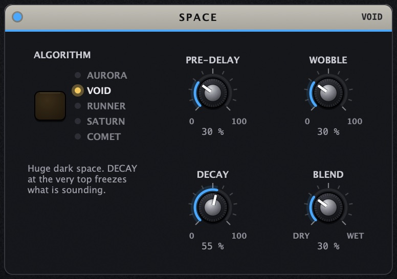
| Algoritmus | X · Y · Z | Zvuk |
|---|---|---|
| AURORA | OCT UP · OCT DOWN · DECAY | Vzdušný shimmer. Nástup se rozmaže a basy ubudou, takže dozvuk je lehký. Oktávy nahoru a dolů jsou měkké a v dozvuku pomalu dál stoupají nebo klesají. DECAY až 20 s. |
| VOID | PRE-DELAY · WOBBLE · DECAY | Obrovský tmavý prostor. DECAY úplně nahoře zmrazí, co zní (FREEZE). |
| RUNNER | FEEDBACK · TIME · PITCH | Schodiště v prostoru: ozvěny přeskakují vlevo a vpravo a každá je posunutá o interval. PITCH zapadá do kroků −12, −7, −5, 0, +5, +7, +12 půltónů a mezi nimi plynule přejíždí. Opakování se rozpouštějí v malé místnosti. |
| SATURN | FREQUENCY · STEPS · ROOM | Zvony a mísy: kruhový modulátor (dva sinusy v oktávě) rozeznívá tři tóny zpívající mísy. STEPS přeskakuje po notách pentatoniky s měkkým přechodem, ROOM přidá prostor. |
| COMET | FEEDBACK · TIME · WOW | Pásková ozvěna: každé opakování se saturuje, tmavne a ztrácí basy. WOW je kolísání rychlosti pásky (wow a flutter), DUST přidá šum pásky. Do 85 % FEEDBACK opakování doznívají, nad 85 % smyčka zpívá, ale nikdy nepřeroste vstup o víc než ~6 dB. |
Všechny zpětnovazební smyčky ve FX jsou omezené a hlasitost se kompenzuje podle FEEDBACKu. Stereo vyvážení odpovídá vstupu (měřeno ±3 dB, L/R do 1 dB).
09Stránka MOD
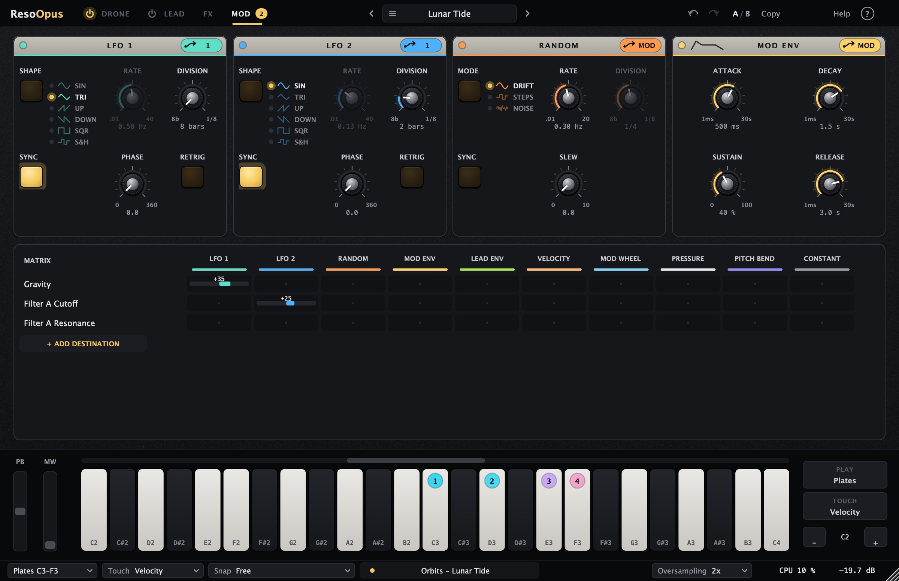
Všechny zdroje pohybu a všechny modulace jsou na jedné stránce (záložka MOD, klávesa 4). Nahoře jsou čtyři zdroje, pod nimi matice.
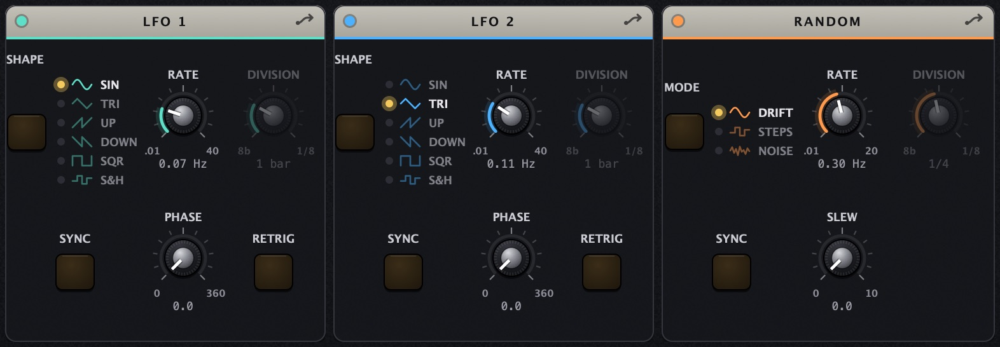
| Zdroj | Ovladače |
|---|---|
| LFO 1 a LFO 2 | SHAPE sinus, trojúhelník, pila nahoru, pila dolů, obdélník, S&H (nový náhodný schod v každém cyklu). RATE 0,01–40 Hz, nebo se zapnutým SYNC DIVISION v tempu (8 taktů až 1/16, trioly i noty s tečkou). Při spuštěném transportu sedí na mřížku skladby. PHASE a RETRIG (každá nota spustí LFO znovu od PHASE). |
| RANDOM | MODE: Drift (plynulé bloudění), Steps (náhodné schody), Noise (rychlé chvění). RATE, se SYNC DIVISION. SLEW schody uhladí. |
| MOD ENV | Obálka ADSR (ATTACK, DECAY, SUSTAIN, RELEASE, časy 1 ms–30 s). Spustí ji každá zahraná klávesa, plates i LEAD, a po puštění poslední klávesy dozní. Hodí se třeba na pomalé otevření filtru nebo nástup GRAVITY s každým akordem. |
| LEAD ENV | Obálka filtru leadu (pilulka v hlavičce FILTER ENV na stránce LEAD). |
Matice modulací
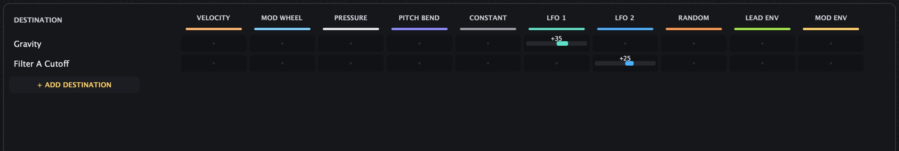
- Tažením buňky nahoru a dolů nastavíš hloubku. V prázdné buňce tím vznikne nová modulace.
- Dvojklikem modulaci smažeš.
- Pravým tlačítkem na buňku otevřeš volby: Enabled (dočasně vypnout), Bipolar, Controller a jeho hloubka, Function a její hloubka, Remove.
- + ADD DESTINATION přidá řádek s dalším cílem. Nabídka je seřazená jako plugin: hlasy 1–4 (nahoře knoby jejich aktuálního typu), Gravity & Master, Lead, FX a Mod. Úplně nahoře je naposledy otočený knob: otoč knobem, klikni na + ADD DESTINATION a je to. Knoby SPACE se jmenují podle zvoleného algoritmu, třeba „Space X (Pre-Delay)“.
- Zdroje (sloupce): LFO 1, LFO 2, Random, Mod Env, Lead Env, Velocity, Mod Wheel, Pressure (aftertouch), Pitch Bend, Constant. Modulací může být až 24.
- Controller funguje jako VCA: modulace je jen tak silná, jak velký je druhý zdroj. Například LFO 1 → GRAVITY s controllerem Mod Wheel houpe jen tolik, kolik vytočíš kolečko.
- Function: Scale, Offset, Low / High Clip, Exponential, Norm Exponential, Low / High Pass, Slew, Low / High Slew, Sample & Hold, Bounce.
Modulaci přidáš i jinak: přetažením pilulky zdroje na knob, nebo pravým tlačítkem na knob → Modulate with. Modulovaný knob má kolem sebe barevné prstence, jeden za každý zdroj. Prstenec pod myší se zvýrazní a jeho tažením měníš hloubku. Při víc než dvou modulacích se u knobu ukáže +n.
10Hraní a lišty
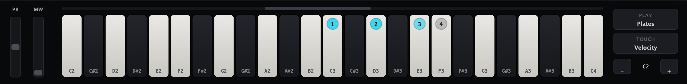
| Volba | Význam |
|---|---|
| PLAY: Plates | Bílé klávesy C3, D3, E3, F3 hrají hlasy 1–4 s jejich vlastním laděním. Plate hlas jen rozezní, výšku určuje jeho TUNE. |
| PLAY: Keys | Zahraná nota přeladí další volný hlas na svou výšku. S LEADem zapnutým hrají všechny klávesy LEAD. |
| TOUCH | Co zesiluje hlas nad HOLD: Velocity, Aftertouch (tlak po úhozu, např. KeyStep) nebo Both. |
| Snap (výběrové tlačítko v dolní liště) | Free = mikrotonální, Chromatic = hlasy se přichytí k půltónům, Scale = ke stupnici (Major, Minor, Dorian, Phrygian, Lydian, Mixolydian, Harmonic Minor, Pentatonic Major/Minor, Whole Tone, Hirajoshi, Double Harmonic). |
V menu Help najdeš velikost okna (70–150 %), ladění (A = 415 / 432 / 440 / 442 / 444 Hz), rozsah pitch bendu, posun plates a tiché přepínání presetů (při změně presetu se výstup na 6 ms ztlumí, smažou se ozvěny a staré hlasy a zvuk se plynule vrátí).
11Prohlížeč presetů
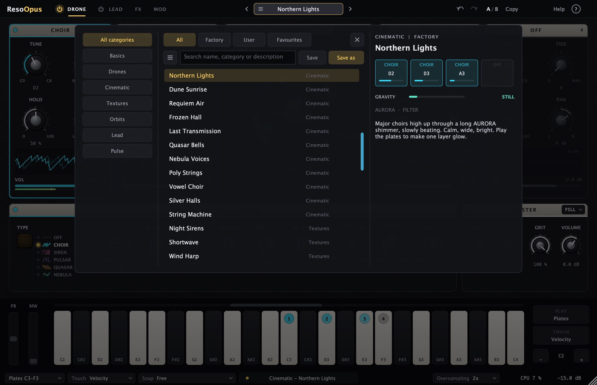
- Otevře se klikem na název presetu v horní liště (šipky vedle procházejí presety bez otevření).
- All / Factory / User / Favourites a kategorie se kombinují. Hledání prochází název, kategorii i popis.
- Hvězdička u presetu = oblíbený. Menu …: nastavit jako výchozí (načte se v každé nové instanci), upravit info, smazat.
- Save přepíše aktuální uživatelský preset, Save as uloží nový. Hvězdička za názvem nahoře znamená, že je preset upravený.
- Šipky ↑ ↓ načítají presety rovnou, Enter nebo Esc prohlížeč zavře.
noir sci-fi · Blade Runner · déšť, neon, mosazné nádechy
Neon a déšť
Široké, pomalu nabíhající plochy jako žesťová sekce v dálce, nad nimi zpívající lead s vibratem na tlak prstu. A všude déšť.
Plocha a zpívající lead
preset Night Lead · Northern LightsTlak prstu zesiluje hlasy nad HOLD jako nádech žesťů a zároveň přidává vibrato do leadu. Hraj pomalé melodie s překrývanými notami, GLIDE je pak spojí.
Déšť: hlas 4 jako SIREN, FM 0, NOISE 60 %, HOLD 15 %, FILTER Band Pass zavřený k 3 kHz.
pouštní epika · Duna · hrdelní hloubka, vítr, tlak
Poušť a koření
Velmi hluboký drone, který vrčí jako hrdelní zpěv, nad ním písečný vítr. Hlasitost cítíš víc v hrudi než v uších.
Hrdelní drone s větrem
preset Deep Ocean · MonasteryTIDE nad 50 % rozvrčí akord jako hrdelní zpěv. ORBIT k tomu přidá chvění. Vítr je šumová siréna s velmi pomalým modulátorem. V gradaci automatizuj GRAVITY pomalu do TURBULENCE.
ambient · čisté, klidné, bez pohybu
Čistý klidný drone
Pod meditaci, dokument nebo klidnou scénu. Žádné vrčení, jen čisté intervaly a vzduch.
Čisté kvinty a světlo
preset Pure Fifths · Northern LightsSTILL nechá jen pomalé zázněje. Jejich rychlost nastavíš jemným rozladěním intervalů OSC (se Shift po centech). AURORA přidá třpyt o oktávu výš. Pro úplný klid dej DUST na 0.
kosmická epika · Interstellar · varhany ve vesmíru
Kosmické varhany
Varhanní rejstříky z pěti pil: 16′, 8′, 4′, 2 ⅔′, 2′. Pomalé nádechy dynamikou a obrovský prostor.
Rejstříky z CHOIRu
preset Monastery · Requiem AirNastav stejné intervaly na dva nebo tři hlasy a vyladíš je na akord (nebo použij FILL). HOLD 30–50 % dá tichý podklad, hraní plates rejstříky „vytáhne“. Pro pulzující gradaci zkus mod wheel → GRAVITY (preset Tidal Lock).
sci-fi · Arrival · mikrotonální clustery, nejistota
První kontakt
Tóny jen kousek od sebe, které se třou a dýchají. Vzdálená dvoutónová siréna, jako by něco volalo zpět.
Mikrotonální cluster
preset Arrival · Microtonal GlassIntervaly po čtvrttónech a centech dělají nejistotu a pomalé zázněje. GRAVITY na hranici ORBIT je rozechvěje. Siréna s obdélníkovým modulátorem je dvoutónové „volání“. Ztiš ji na −10 dB a nech ji daleko.
80. léta · Stranger Things · arpeggio přes drone
Synthwave arpeggio
Pulzující pila v šestnáctinách přes temný mollový drone. Klasika soundtracků inspirovaných osmdesátkami.
Arpeggio v tempu
preset Pulse EngineDrž dvě nebo tři noty mimo plates. LATCH arpeggio udrží. Pomalu otevírej CUTOFF přes celou sekci (automatizace nebo mod wheel). ECHO 375 ms je při 120 BPM osmina s tečkou.
thriller · Sicario · podprahový tlak, tep
Plíživá hrozba
Skoro neslyšitelný spodek, který se propadá, a pomalý tep. Napětí, které roste, aniž si toho divák všimne.
Propadající se drone s tepem
preset Heartbeat · Sinking ChoirSiréna sekaná AM kolem 1 Hz s podtónem 1:2 zní jako tep. Pro zrychlující se tep automatizuj RATE. GRAVITY pomalu stoupající do TURBULENCE přidává neklid tak plíživě, že ho posluchač vnímá dřív, než ho slyší.
industriál · Černobyl · hukot strojů, radiace
Zóna a reaktor
Elektrický hukot, rozbitá technika, praskání v pozadí. Kovový, špinavý, nebezpečný.
Hukot a praskání
preset Iron Hum · Deep Field StaticDva skoro stejně naladěné hlasy brumí v záznějích jako transformátor. DIODE s drivem přidá špínu, SATURN kovové alikvoty. Siréna sekaná rychlou AM se šumem praská jako Geigerův počítač. Zkus i TIDE nad 80 % na dně akordu a GRIT nech na 100 %, ať to praská.
sci-fi horor · Vetřelec · hukot lodi, signály z dálky
Hluboký vesmír
Hukot obří lodi, maják a rozbitý signál. Prázdnota, ve které je něco slyšet.
Loď a maják
preset Last Transmission · Morse Beacon · ShortwavePULSAR s TWIN pár centů od unisona dá pomalé zázněje jako motory lodi. Siréna sekaná AM je maják. RATE zpomal pro delší pauzy. COMET rozmaže a zašpiní signál. Pro „ladění rádia“ přepni FILTER na SCREAM Band Pass a otáčej CUTOFF (preset Shortwave).
meditace · tanpura, zpívající mísy
Meditace
Základ, kvinta a oktáva jako indická tanpura, nad nimi rozkvétající tóny a kovové mísy.
Tanpura a mísy
preset Tanpura BedTUNE hlasu 1 nastav na základní tón (sa). BLOOM nechá pulsar při každém hraní plate rozkvést jako drnknutí struny. SATURN s ROOM dá kovový lesk misek. Pokud chceš ladění 432 Hz, najdeš ho v menu Help → Tuning.
12Tovární presety
65 presetů v sedmi kategoriích. Otevři prohlížeč klikem na název presetu, nebo procházej šipkami ◀ ▶.
| Preset | Na co a co otočit |
|---|---|
| Basics | |
| Init | Drone hned po vložení: dva nízké choiry, pulsar a pomalá siréna. Hraj C3–F3, HOLD nastaví úroveň. |
| Pure Fifths | Jeden čistý choir v kvintách, nic se nehýbe. Nejprostší start: nalaď hlas 1 do své tóniny. |
| Four Plates | Čtyři samostatné pily, každá klávesa C3–F3 hraje jeden hlas. Na naučení plates. |
| Keys Drone | Režim Keys: každá zahraná nota přeladí další volný hlas a drží ho. |
| Drones | |
| Low Choir | Dva hluboké choiry o kvintu od sebe. TIDE hlasu 1 je stáhne do vrčení. |
| Sinking Choir | Spodní choir stažený TIDE do vrčení, pulsar zůstává čistý nad ním. TIDE mezi 40 a 80 %. |
| Deep Ocean | Velmi nízký choir pod pomalým LADDER filtrem. Velké a tmavé, CUTOFF přidá světlo na hladině. |
| Monastery | Choiry v oktávách a kvintách jako mužské hlasy v kameni, nad nimi AURORA. |
| Tanpura Bed | Základ, kvinta a oktáva, nad nimi rozkvétající pulsar. TUNE hlasu 1 = tónika. |
| Iron Hum | Industriál: dva lehce rozladěné choiry přes přebuzený DIODE filtr. |
| Low Saturn | Tmavý choir přes kovový SATURN, alikvoty jako zvony. Plates přivolají vzdálenou sirénu. |
| Cello Ground | Pulsar jako smyčec s vibratem nad měkkým choirem. Teplé a dřevité. |
| Analog Choir | Dva choiry s CHARACTER k Analog: každá pila jiná a bloudící, kulatější a teplejší. Porovnej s CHARACTER 0. |
| Iron Quasar | Nízký QUASAR s kovovým RATIO a FEEDBACK, FINE přidá pomalé zázněje. Temné stroje, hukot lodi. |
| Nebula Organ | NEBULA s tabulkou ORGAN: mod wheel vytahuje rejstříky od flétny po plné varhany. |
| Tape Monastery | Dva choiry přes ECHO TAPE: dvě hlavy na jedné páskové smyčce, každé opakování tmavší a houpavé. WOW = opotřebovaná páska, FEEDBACK nad 85 % rozezpívá smyčku. |
| Throat Singers | Vrčící hluboký choir přes filtr VOWEL: LFO 1 pomalu otevírá hrdlo od U přes O k A a zpět. RESONANCE zostří samohlásky, MODE BAND z něj udělá ženu. |
| Cinematic | |
| Slow Bloom | Ticho, dokud nehraješ: každá plate se rozvine během několika sekund a doznívá dvanáct sekund. |
| Microtonal Glass | Choiry pár centů od sebe, pomalé zázněje jako skleněná harmonika. |
| Pulsar Field | Čtyři pulsary od měkkého po ostrý, každý rozkvete z podladění do výšky. |
| Arrival | Obrovský nízký cluster a vzdálená dvoutónová siréna. GRAVITY k ORBIT, když scéna graduje. |
| Northern Lights | Durové choiry vysoko přes dlouhou AURORU. Klidné, široké, jasné. |
| Dune Sunrise | Mollové choiry a teplý pulsar s pomalým echem. Žár nad pískem, DUST = tetelení. |
| Requiem Air | Smutné vzdušné mollové choiry, jen při hraní, dlouhý release. Drž akordy na plates. |
| Frozen Hall | VOID na hraně FREEZE: co zahraješ, zůstane viset. DECAY dolů = rozmrazit. |
| Last Transmission | Rozbitý signál: sekaná siréna nad nízkým dronem přes COMET. |
| Quasar Bells | Dva QUASARy s neharmonickým RATIO: skleněné zvony, které při doznívání tmavnou (TRACK). INDEX = jas. |
| Nebula Voices | NEBULA s tabulkou VOCAL: bručení a samohlásky, které se hraním otevírají (SCAN) a samy bloudí (DRIFT). |
| Poly Strings | LEAD v Poly 8 jako pomalá smyčcová plocha nad tichým dronem. Hraj akordy mimo plates. |
| Vowel Choir | Hraj plates: MOD ENV otevírá samohlásku od O k E, zatímco akord sílí. Vzdálený ženský sbor, delší držení = jasnější samohlásky. |
| Silver Halls | Jasné durové choiry, opakování s chorusem z ECHO MOD a vzdušný třpyt AURORY nad nimi. Na nadějné, otevřené scény, OCT UP (X) přidá světlo. |
| Textures | |
| Night Sirens | Pomalu kvílící siréna nad choirem a vzdálená dvoutónová siréna se šumem. |
| Shortwave | Rádio mezi stanicemi: šumové sirény přes SCREAM band pass. CUTOFF = ladění. |
| Wind Harp | Šumový vítr a pískající sirény s tichým choirem. NOISE hlasů 3–4 = poryvy. |
| Rain Machine | Rychle sekané sirény přes RUNNER: kapky padající ve výšce. RATE = liják. |
| Deep Field Static | Choir pohřbený v DUST a kruhové modulaci. Stará páska, kosmické pozadí. |
| Glass Rain | Jasné pulsary v ECHU, které samo zpívá. Hraj E3 a F3 lehce. |
| Crushed Sirens | Sirény a choir s CHARACTER k Digital: málo bitů, nízký vzorkovací kmitočet, aliasing jako barva. |
| Glass Nebula | Tabulky NEBULA GLASS procházené RANDOMem a LFO: digitální zvonkohra, která se neopakuje. |
| Stereo Filters | ROUTING Stereo: pásmový FILTER A vlevo, B vpravo, každý houpaný jiným LFO. Široké a živé. |
| Hollow Tubes | COMB v režimu HIGH naladěný na dron (CUTOFF 147 Hz): zní jen liché harmonické, dutě jako trubka nebo klarinet. ECHO MOD to rozšíří do pomalého chorusu. |
| Broken Transmission | Sekaná siréna nad hlubokým choirem přes ECHO LO-FI: opakování ztrácejí bity a vzorkovací kmitočet a rozpadají se, COMET přidá ohranou pásku. DEGRADE = jak moc rozbité. |
| Singing Bowls | Měkké pulsary rozeznívají v SATURNu tři tóny mís, STEPS je nechá putovat po pentatonice. Plates = úder do mísy, ROOM (Z) větší prostor. |
| Rising Stairs | Hraj plates: každé opakování RUNNERu vystoupá o kvintu a rozpustí se v místnosti, schodiště do nebe. PITCH zapadá i do jiných intervalů od −12 do +12. |
| Orbits | |
| Gravity Well | Tlak prstu stáhne GRAVITY do TURBULENCE, po puštění se hlasy uklidní. |
| Collapse | Všechny hlasy v kruhu za hranou: smyčka pulzuje sama. GRAVITY pod 85 % ji zkrotí. |
| Binary Stars | Dva páry na oběžné dráze naladěné těsně vedle sebe, FM dělá pomalé zázněje. |
| Tidal Lock | Mod wheel = GRAVITY. Projeď ho pomalu celým rozsahem. |
| Ring World | Kruh čtyř hlasů v TURBULENCE přes LADDER: živá smyčka, která se neopakuje. |
| Event Horizon | Silnější tlak táhne do COLLAPSE a echo se vrací do hlasů. Hraj jemně, ať se vznášíš na hraně. |
| Lunar Tide | LFO 1 houpe GRAVITY mezi STILL a TURBULENCE přes 8 taktů, LFO 2 otevírá filtr. Drone, který dýchá v tempu. |
| Lead | |
| Solo Saw | Klasický mono saw lead s glidem a zpožděným vibratem nad tichým dronem. |
| Night Lead | Měkký zpívající lead s dlouhým glidem ve VOID. Tlak = víc vibrata. |
| Glide Sine | Čistý sinus se subem klouže mezi notami. Hraj legato. |
| Sync Scream | Tvrdý sync přes SCREAM filtr. Mod wheel trhá OSC 2. |
| Squelch Bass | Square přes DIODE s vysokou rezonancí: gumová kyselá basa. Velocity otevírá filtr. |
| Pure Lead | DRONE vypnutý, jen LEAD: všechny klávesy hrají klasický saw lead s vlastní obálkou filtru. |
| Split Worlds | ROUTING Split: drone se noří do tmavého LADDERu (A), lead září přes high pass (B). |
| Comb Harp | LEAD v Poly 8 přes COMB naladěný na klávesy (KEY 100 %, CUTOFF 262 Hz = C3): každá nota zazní jako drnknutá struna. RESONANCE = jak dlouho zní, MODE HIGH = dutá trubka. |
| Tape Lead | Zpívající saw lead přes ECHO TAPE: dvě hlavy, tmavší a houpavá opakování. Otoč HEAD 1 během hraní a uslyšíš, jak klouže rychlost pásku. |
| Pulse | |
| Pulse Engine | Arpeggio v šestnáctinách přes LADDER drone. Drž akord mimo plates. |
| Constellation | Ping-pong arpeggio měkkých sinusů přes tři oktávy a shimmer. Hvězdy se rozsvěcují. |
| Morse Beacon | Siréna sekaná na pípnutí, pomalý maják a nízký drone. RATE = rychlost kódu. |
| Heartbeat | Nízká siréna pomalu sekaná s podtónem: hluboký tep jako srdce nebo motor. |
| Ping-Pong Arp | Drž akord mimo plates: zachycené arpeggio skáče vlevo a vpravo v ECHO PING-PONG (375 ms = osmina s tečkou při 120 BPM). |
13Měření
Hodnoty měří testovací aplikace ResoOpusTests při každém buildu (48 kHz, Apple M1).
| Vlastnost | Hodnota |
|---|---|
| Přesnost ladění (TUNE, intervaly, PITCH, A = 432 Hz, Snap, SIREN, LEAD) | nejhůř 0,016 centu |
| Aliasing 1976 Hz pod 10 kHz: pila CHOIR 2× / 1× | −93 / −81 dB |
| QUASAR 1976 Hz, RATIO 3, INDEX 100 / NEBULA 1976 Hz (všechny tabulky) | −76 / −88 dB |
| GRAVITY: rozdíl hlasitosti STILL → COLLAPSE | 2,2 dB |
| Stabilita 60 s ve všech zónách GRAVITY, 44,1–192 kHz | bez NaN, ≤ −0,3 dBFS |
| FILTER: LP na 3 kHz / HP na 110 Hz (5 analogových modelů) | −31 až −64 / −53 až −109 dB |
| ROUTING Split: lead přes HP 3 kHz / drone přes A | −33 dB / beze změny |
| LEAD Poly 8: akord C-E-G, rozdíl úrovní not | 0,7 dB |
| LFO 1/4 v tempu 120 BPM: hran za 2 s | 8 (přesně) |
| CPU: výchozí patch 2× / 4 QUASAR / 4 NEBULA / + LEAD Poly 8 / nečinnost | 2,8 / 4,0 / 3,0 / 6,2 / 0,7 % |
| Audit parametrů (mění každý zvuk?) | 262 ze 262 |
| GRIT 50 %: cvakání choiru s TIDE 75 % nad 1 kHz / běžný choir | −23 → −43 dB / −13 → −15 dB |
14Řešení potíží
| Problém | Řešení |
|---|---|
| Po vložení nic nehraje | Preset má HOLD na 0 (Slow Bloom, Requiem Air…), nebo je DRONE vypnutý (vypínač u záložky DRONE). |
| Klávesy mimo C3–F3 nic nedělají | LEAD je vypnutý. Zapni ho vypínačem u záložky LEAD. |
| Plates hrají lead místo dronu | DRONE je vypnutý, takže všechny klávesy hrají LEAD. Zapni DRONE. |
| Hlas nezní | Jeho TYPE je OFF, nebo je VOL na −∞. |
| FILTER B nic nedělá | Zapni tlačítko ON ve FILTER B. |
| LFO nic nedělá | LFO samo nic nemění: přetáhni barevnou pilulku z hlavičky na knob, nebo nastav hloubku v matici na stránce MOD. |
| PATH nic nemění | PATH se uplatní až od ORBIT. Ve STILL se hlasy netahají. |
| Arpeggio stojí | ARP drží jen klávesy, které hrají LEAD. Bez LATCH hraje, jen dokud klávesy držíš. Tempo bere ze skladby. |
| Aftertouch nic nedělá | TOUCH přepni na Aftertouch nebo Both. Klávesy musí posílat channel pressure. |
| Popisky nad knoby se neukazují | Zapni je ikonou ? vpravo nahoře. |
| Pískání ve výškách | Oversampling 1× v dolní liště, nebo CHARACTER otočený doleva (Digital). |
| Praskání a cvakání | Způsobuje ho TIDE nad 50 % (pily klesnou na pár Hz) a GRAVITY od ORBIT výš. Stáhni GRIT v MASTER na 30–60 %. |
15Myš a klávesy
| Akce | Výsledek |
|---|---|
| Tažení knobu nahoru/dolů | Změna hodnoty, Shift = jemně (u ladění po centech) |
| Kolečko nad knobem | Krok (u přepínačů jedna volba) |
| Dvojklik na knob | Napsat hodnotu: D2+12, +19 -8c, 2.5k, 3 s, L 30 |
| Cmd/Ctrl-klik | Výchozí hodnota |
| Pravé tlačítko na knob | Reset, napsat, Modulate with, správa modulací |
| Tažení prstence knobu | Hloubka modulace (zvýrazní se prstenec pod myší) |
| Pilulka v hlavičce LFO / RANDOM / MOD ENV / FILTER ENV → knob | Nová modulace |
| Matice: tažení buňky / dvojklik / pravé tlačítko | Hloubka / smazat / volby |
| Klik do modulu hlasu / na SCOPE | Vybere hlas / přepne osciloskop a spektrum |
| 1 / 2 / 3 / 4 | Stránky DRONE / LEAD / FX / MOD |
| 9 / 0, Esc | Stránku MOD otevřít / zavřít (zpět na předchozí stránku) |
| Cmd+Z, Shift+Cmd+Z | Undo / Redo |
| Klávesnice dole: klik níž do klávesy | Silnější úhoz. Tažením přes klávesy glissando. |
16Instalace a soubory
| macOS | Windows | |
|---|---|---|
| VST3 | ~/Library/Audio/Plug-Ins/VST3/ResoOpus.vst3 | C:\Program Files\Common Files\VST3\ResoOpus.vst3 |
| AU | ~/Library/Audio/Plug-Ins/Components/ResoOpus.component | – |
| Uživatelské presety | ~/Documents/Gavr/ResoOpus Presets/*.ropreset | Documents\Gavr\ResoOpus Presets\*.ropreset |
| Nastavení (nápověda, velikost, oblíbené) | ~/Library/Application Support/Gavr/ResoOpus/ | %APPDATA%\Gavr\ResoOpus\ |
V Abletonu: Settings → Plug-Ins → zapni „Use VST3 Plug-In System Folders“ → Rescan. ResoOpus najdeš pod Plug-Ins → Gavr.